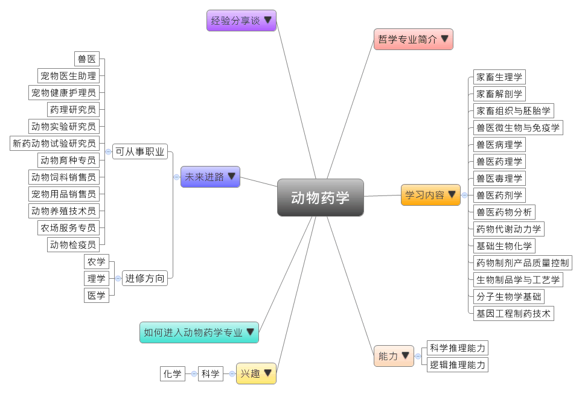

- 专业大观园
-

- 专业介绍
-
什么是动物药学？
动物药学专业是以动物药学的基本理论为核心内容，对动物药品配方、生产开发、药物与毒素残留检测、动物性食品安全、动物药品营销，以及药政管理等动物药品相关知识和技能进行研究的动物医、药学的交叉专业。基本的任务是研究与基础兽医学相关的药理与毒理方面的内容，以达到有效研制、开发、检验、销售与生产兽药的目的。
动物药学专业培养掌握动物药学基本理论、知识和技能，具备良好的职业道德和敬业精神，能在兽药生产、管理及检验等相关部门从事药物研制、开发、生产、销售、管理、检验、教学、科研等方面工作的，为提高我国动物药品质量和竞争能力服务的具有创新精神和实践能力的应用型高级专业技术人才。

药物分析实验课程 
参观生物制药公司的设备
- 学习内容
-
动物药学专业学生主要学习动物药学的基础理论和基本技能，受到动物药学专业的各项基本技能训练，接受科学研究思维和技能训练，强化学生的实际操作能力、创新能力，具备对化学药物、生化制品的生产管理、质量控制、设计与开发、监督管理、合理用药、教学、科学研究等工作的基本能力。
本专业学习方向有专业基础和专业课程。动物药学专业主干课程有：家畜解剖学、家畜组织与胚胎学、家畜生理学、兽医微生物与免疫学、兽医病理学、兽医药理学、兽医毒理学、兽医药剂学、兽医药物分析、药物代谢动力学、有机化学、基础生物化学、药物化学、药政管理学、药物制剂产品质量控制、生化制药、生物制品学与工艺学、分子生物学基础、基因工程制药技术等。主要实践教学环节课程有：家畜解剖学课程实习、家畜组织与胚胎学课程实习、兽医药理学课程实习、兽医病理学课程实习、生物制品学与工艺学课程实习、兽医药剂学课程实习、兽医药物分析课程实习。
本专业可以习得的知识与获得之能力、技能列点：第一、具备药物成分的分析和鉴定知识与能力，以及熟悉动物药品的检验规程及其检验技术；第二、具备药物制剂理论、生产技术和质量控制的能力；第三、熟悉动物药品及添加剂的应用，以及国内外药政管理的现状及有关政策法规。
- 能力
-
动物药学专业学生，需具备以下能力：
相关性向能力 说明 逻辑推理能力  了解动物药品配方对于动物健康的影响
了解动物药品配方对于动物健康的影响
分析各种毒素残留对于动物性食品的安全顾虑科学推理能力 具备药物分析和鉴定的知识与能力
熟悉动物药品的检验规程及其检验技术
具备动物组织与胚胎学的知识，并能进行动物解剖的能力
- 兴趣
-
若你对下列活动或事物有高度兴趣，可考虑进入动物药学专业学习：
科学 化学 想要改善动物生活质量
希望能提升动物性产品的安全质量
对于了解生物相关理论与疾病成因，如动物照顾培育或疾病治疗等事务感到兴趣
- 如何进入此专业
-
下面列举开设动物药学专业的211工程重点大学院校：
- 未来进路
-
可从事职业
动物药学专业毕业生毕业后可以到药品生产、检验、销售、研究开发等制药企业、保健公司、药检局、防疫站、现代养殖场、科研院所、行政管理部门，从事与药学有关的药品配方与生产、推广与开发、经营与管理、教学与科研等工作。还可以自主研发动物药品、从事药物剂型及制剂的设计和制备、药物及其制剂的分析检验、动物临床药学研究、药品质量评价监督、药品营销和药物资源开发利用策划等工作。在工作职场上皆能发挥药品检验、药物资源开发等专长：
行业 职业 制药、生物工程 药理研究员、动物实验研究员、新药动物试验研究员 医疗、护理、卫生 兽医、宠物医生助理、动物实验技术员、宠物健康护理员 农、林、牧、渔 动物育种专员 医疗设备、器械 销售经理、销售工程师、动物饲料销售员、宠物用品销售员、动物养殖技术员、农场服务专员 政府、公共事业 公务员（畜牧行政管理）、动物检疫员（进出口动物及其产品检验） 进修方向以下列举动物药学专业毕业生可以继续修读之学科门类、一级学科与硕士点：
学科门类 一级学科 硕士点 农学 兽医学预防兽医学、临床兽医学、基础兽医学、兽医公共卫生与食品安全、动物医学工程、兽医药学、兽医生物工程 畜牧学畜禽安全生产与控制、动物生产、动物生物工程、动物健康养殖与安全生产、动物性食品科学与工程 兽医硕士兽医硕士 理学 生物学动物学、动物病原生物学、生物制药工艺学 药学药物化学、药剂学、药物分析学 医学 药学药理学、药物化学、药剂学、药物分析学、社会与管理药学、药物代谢动力学、天然药物化学、生物技术与工程、药事管理学、药物生物信息学 药学硕士药学硕士
- 经验分享谈
-
推动祖国动物药学与新兽药研究发展——张小莺
张小莺，男，西北农林科技大学教授。主要从事药理学、病原菌快速检测、新药研发及抗体工程。2005年起在德国柏林洪堡大学及德国卫生部罗伯特科赫研究所作为访问学者。2006年受聘外国专家局智力引进专家，协助国内开发兽用诊断试剂和抗体药物，从此他由“人药”研究转向“兽药”研究，也使他清楚地看到了国内兽药研究领域的严重空白。面对祖国动物药学的需求，他毅然转向了这一领域的研究。张小莺用最短的时间组建起了抗体与药物研究课题组，经过几年的发展，现已组建动物药学与新兽药研发团队，以“抗体技术、纳米药物和抗生素替代”为研究特色，致力于兽用生物制品与新兽药的研发。
面对我国动物疫病防控体系薄弱，抗生素滥用、动物源食品安全与兽药残留检测方面存在的问题，张小莺团队积极通过基因工程、抗体工程、纳米制剂、天然产物研究等手段，针对我国流行疫病、动物食品兽药残留和违禁添加剂，研发快速检测试剂盒。目前，团队已经研发了一批具有检测功能的多抗及单抗产品，并成功应用于药物残留及违禁物检测和动物疾病的检测。技术上的突破极大地拓展了抗体在动物食品安全与兽药残留检测方面的应用，其产品为我国食品生物安全监控和社会稳定做出了直接的贡献。国际合作研究给我国抗生素替代研究带来了全新的思路和技术，建立中国植物提取物库，对具有抗菌抗毒力因子的天然活性物质进行通量化筛选，实现先导药物的快速发现。这些理念和技术将对我国生物技术药物和天然产物药物研究产生重要影响，并将在我国抗生素替代研究中发挥巨大作用。 【资料来源：推动祖国动物药学与新兽药研究发展[EB/OL]. 原创力文档，2018-10-09】